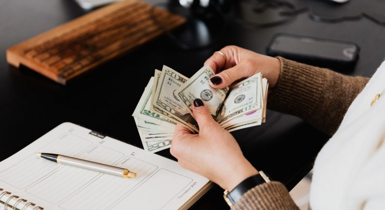
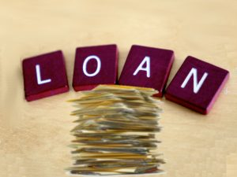

Ways to Reduce Your Home Loan Debt and Save Money
Whether you’re nearing retirement and trying to make your income go a little farther or you’re trying to build back your savings after a major expense, your home loan debt can be a major factor in determining how soon you are able to retire or how much you can save.
Thankfully, with a little research and the right kind of assistance, there are several ways to reduce your home loan debt so that you can spend more of your money doing the things that you want to do.We’re going to explore some ways to reduce your home loan debt for both those looking to purchase a home, as well as those already in their home so that everyone has a fair shot at saving money and bettering their lives.
We should note that not all of these solutions will work everywhere and for everyone, but these are just a few examples of ways that you can save money.
Establish an Offset Account For Your Home Loan
For those that don’t know, an offset account is a bank account that is attached to the balance on your home loan.It can be tied to your salary or a saving account and is used to lower the amount of interest paid on a home loan.
The way it works is that the offset account is tied to the balance on the home loan and each day a portion of the home loan is offset by that amount.This means that the amount of interest accrued on the home loan is based on the difference between the home loan balance and the offset account.
While this doesn’t directly reduce your monthly payments, it will save you thousands on interest that would normally accrue on your home loan and can lead to a much earlier payoff if managed well.
Consider Renting Your Extra Space
Speaking of offsetting, renting out a room, converted garage or other extra space in your home is a great way to save on your mortgage.Depending on the amount of space you have and the average price of rent you can charge, you could offset part or all of your mortgage costs.
Unlike subletting an apartment, there are generally fewer restrictions to having renters in your home.In the most basic of cases, you can save on your mortgage or apply the extra income to the total balance and bring down the principal and interest.In the best cases, you may be able to cover your mortgage and turn a profit if you don’t need the majority of your home’s space.
Make Extra Payments When You Can
This option may not be viable for all homeowners, but making even a couple of extra payments a year if you have a mortgage agreement that permits it, can lower your interest and the time it takes to pay off your home substantially.
Like an offset account, any extra money applied to the principal will cut down on interest by a measurable amount over the term of your mortgage.Some mortgage contracts have a no early payout penalty clause which allows you to pay extra on your mortgage and even pay off the entire thing early without any fees or penalties.If you find yourself in the position to make extra payments, this is something to consider.
We hope these tips have given you some ideas to reduce your mortgage debt and put yourself in the position you want to be in.
Share on Facebook Tweet Follow us
Posted On: 2021-05-18T00:00:00
Posted By: David Jackson




Content Date: 2021-05-18
Download Date: 2021-07-09
Document ID: L0C04E2EP